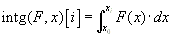

diff(y,x) : calcule la dérivée =d(y)/d(x) : la méthode de calcul est modifiable par l'intermédiaire du menu Options. On effectue un lissage sur N points par un polynôme d'ordre p (N et p sont paramétrables directement dans l'expression : diff(y,x,p,N) ou dans les options, onglet calcul), puis on détermine la dérivée par calcul de la valeur de la dérivée du polynôme. Si vous avez des données avec une haute fréquence d'échantillonnage ou beaucoup de bruit, vous avez intérêt à prendre N grand. On peut aussi utiliser la syntaxe d(y)/d(x).
Le choix linéaire convient la plupart du temps. Le choix parabolique est utile pour déterminer convenablement les dérivées aux extrémités. Pour les points extrêmes, le problème est que le point courant n'est pas au centre du lissage. Cela fausse donc le résultat. Si on prend le cas d'une concavité initiale vers le bas, la valeur de la dérivée sera systématiquement affectée d'une erreur par défaut. Si on effectue un lissage parabolique, la valeur obtenue devient correcte aux extrémités pour une parabole, et cela se généralise aux courbes "raisonnables".
intg(f,x) : intégrale numérique pour le point courant numéro i :
valeur en i = somme pour i variant de 2 à i de (f(i-1)+fi)/2)*(x(i-1)-xi). x étant ordonné dans le sens croissant.
Exemple : vous avez enregistré l'intensité d'une force F en fonction de la position x, vous pouvez créer Ep, énergie potentielle, en prenant comme variable x et comme fonction -F.

Ces deux fonctions doivent apparaître seules dans une définition y=diff(x,t) mais pas y=diff(x,t)*3.
intg(f,x,a,b) : intégrale numérique de a à b :
Cette fonction renvoie un paramètre.
intgd(a,inf,sup,f) : a est la variable muette d'intégration, inf et sup sont les bornes inférieure et supérieure d'intégration et f la fonction à intégrer  . Cette fonction peut apparaître à l'intérieur d'une expression.
. Cette fonction peut apparaître à l'intérieur d'une expression.
Créé avec HelpNDoc Personal Edition: Créer des documents d'aide facilement